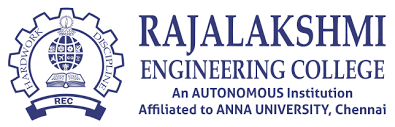

RAJALAKSHMI ENGINEERING COLLEGE

Rajalakshmi Engineering College, an autonomous institution affiliated to Anna University, Chennai, was established in the year 1997 under the aegis of Rajalakshmi Educational Trust whose members have had consummate experience in the fields of education and industry.
Started with 3 Under Graduate programmes in Engineering with an annual intake of 180 students in 1997, the College presently offers 18 Under Graduate and 9 Post Graduate programmes including MBA program, with an annual intake of 2070 students. The approval of AICTE and affiliation of the Anna University for such a progressive intake is a standing testimony for the continuous growth of the college over the years. 9 of our departments are recognized as Research Centers of Anna University to conduct Ph.D. and M.S. (By Research) programmes and many scholars have obtained Ph.D. through these research centres.
Ours is one among the few Colleges to receive accreditation for Under Graduate Engineering programmes from the National Board of Accreditation (NBA), New Delhi, as soon as attaining the eligibility to apply for accreditation. The College is accredited by the National Assessment and Accreditation Council (NAAC) with 'A++' Grade. The college has also secured 12(b) status from UGC.